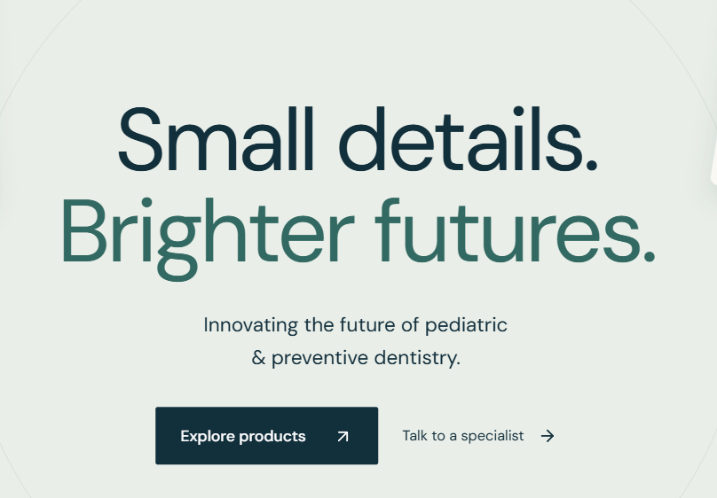
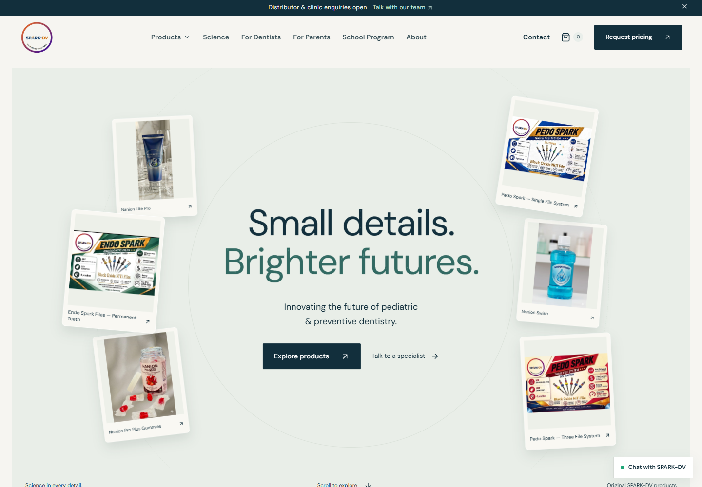
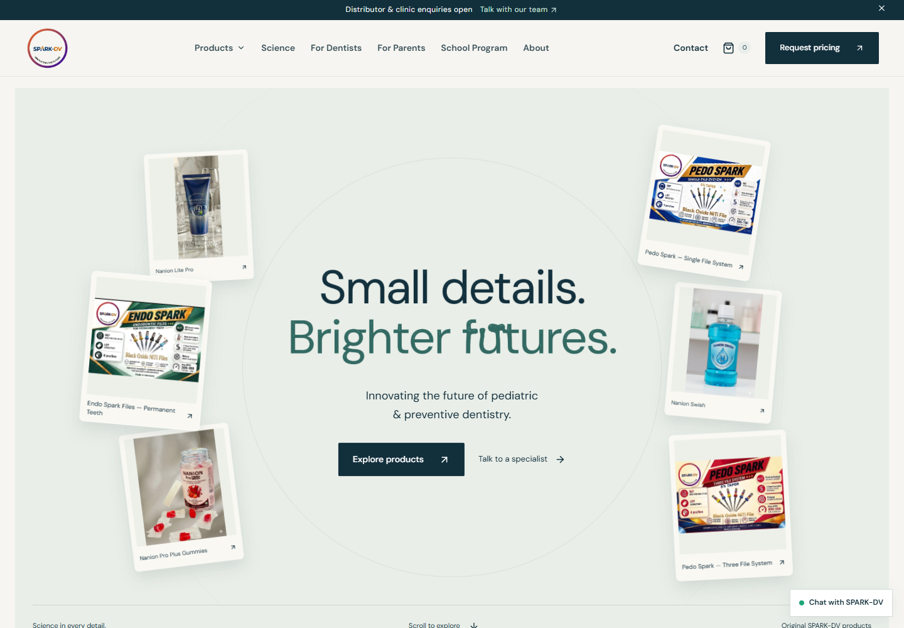
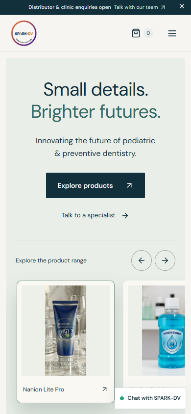

SPARK-DV: liquid homepage headline
Both headline lines use the supplied liquid text effect. Move a pointer across the letters to pull the ink; it settles when the pointer leaves. Original product photographs remain unchanged.
Open the interactive homepage
Before: supplied screenshot

After: resting headline

After: liquid ink interaction

Without WebGL

Checked at 320, 390, 768, 1024 and 1440 pixels, including touch scrolling, reduced-motion changes, WebGL loss and recovery, product links and keyboard navigation.